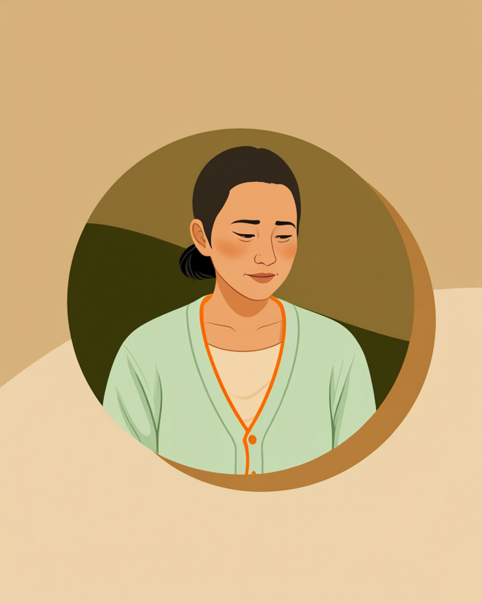

「順調です」を、疑わなかった頃
「順調です」
電話の向こうで、その相談者はいつも同じ調子でそう答えていました。
声のトーンも、間の取り方も、毎回ほとんど変わりません。だから自分は、その一言をそのまま記録用紙に書き込んで、次の訪問予定を決めるだけの数分間で通話を終えていました。
就職して3ヶ月、4ヶ月、5ヶ月。「順調です」という報告が積み重なるたびに、こちらの気持ちも軽くなっていきました。担当している他の相談者に時間を割けるようになったのも、この人のことは大丈夫だろうという安心感があったからです。
異変に気づいたのは、こちらからではありませんでした。ある日、就職先の人事担当者から、少し困ったような声で電話がかかってきたのです。
「最近、休みがちで。本人に聞いても、大丈夫としか言わないんですが」
電話を切ったあと、自分の記録を見返しました。先週も、その前の週も、欄には同じ三文字が並んでいました。順調です。
なぜ、その一言を疑うようになったのか
最初からその言葉を疑っていたわけではありません。むしろ支援員になりたてのころは、「順調です」という報告をそのまま信じることが、相手を信頼している証拠だとさえ思っていました。何度も聞き返すのは、かえって失礼なのではないかとも感じていました。
後日、本人に改めて話を聞く機会がありました。休みがちになった理由を尋ねると、しばらく黙ったあとに、こう言いました。
「しんどいって言ったら、また就職やり直しになるのかなって思ってました。せっかく決まった仕事だし、支援員さんにも喜んでもらえたし。だから聞かれるたびに、順調ですって答えるのが一番早いかなって。正直、自分でもだんだん本当のことが分からなくなってきてた気がします。」
その言葉を聞いて、自分がしていたことにようやく気づきました。「順調ですか」という聞き方は、本人にとって「はい」か「いいえ」しか選べない質問だったのです。半年かけてやっと決まった仕事を、自分から手放したくない。支援員を心配させたくない。そう思っている人に向かって、はい以外の答えを期待するのは、そもそも無理があったのかもしれません。
それから他の相談者の記録も見返してみると、似たようなパターンに何度も気づきました。声のトーンが少し硬くなる人、返事までの間が心なしか長くなる人。「順調です」という言葉の中身は、決して一つではなかったのです。
聞き方を変えてみたら、見えてきたもの
それから、面談での聞き方を少しずつ変えるようにしました。「順調ですか」という聞き方をやめて、もっと具体的な場面を尋ねるようにしたのです。

驚いたのは、聞き方を変えた瞬間に、相手の表情が変わったことでした。「順調ですか」に対しては反射的に返ってきていた「はい」が、具体的な場面を尋ねると、少しずつ言葉を選びながら出てくるようになったのです。大きな質問には大きな建前で答え、小さな質問には小さな本音が漏れる。そんな傾向があるように感じています。
もちろん、すべての「順調です」の裏に何かが隠れているわけではありません。本当に落ち着いて働けている人も、当然たくさんいます。だからこそ、疑うことが目的になってはいけないと自分に言い聞かせています。目的は、本人が言い出しにくいことに、こちらが先に気づける状態をつくっておくことです。
今、定着支援で気をつけていること
まず、はい・いいえで終わる質問を減らす
「順調ですか」のような、はいかいいえだけで終わってしまう質問は、面談の最初の一言としては使わないようにしています。代わりに、「最近、一番大変だった場面はどんなときでしたか」など、具体的な場面を思い出してもらう聞き方を意識しています。
次に、声のトーンや間の変化も記録する
言葉の内容だけでなく、いつもより声が硬い、返事までの間が長い、といった変化にも意識を向けるようにしています。数字や言葉として記録に残しにくい部分ですが、次の面談で話を切り出すきっかけになることがあります。
- 「順調ですか」を面談の最初の質問にしない
- 具体的な場面を尋ねて、本人の言葉で語ってもらう
- 声のトーンや間の変化にも意識を向ける
- 「順調です」を疑う姿勢を、本人に悟らせすぎない
よくある質問
関連記事
この記事に、聞いてみたいことはありますか？
「自分の場合はどうなんだろう」と思ったことを、気軽に書いてみてください。いただいた質問は個別にお返事したうえで、匿名で記事にすることがあります。
mimemime代表。就労支援の現場経験をもとに、障がいのある方の働く不安に寄り添う記事を執筆。